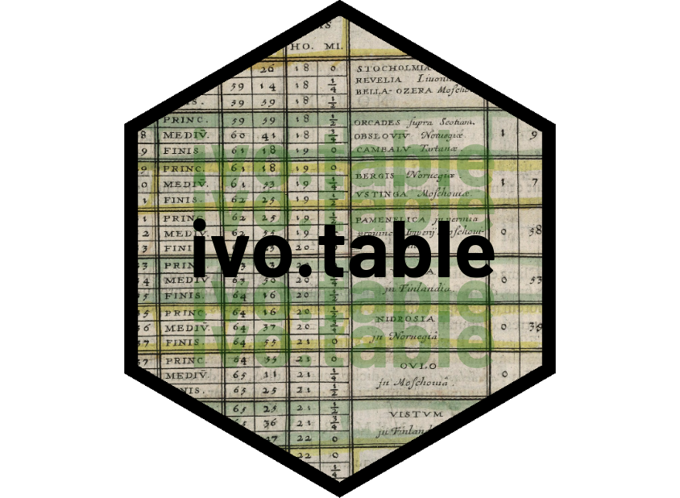

This R package provides functions for easily creating nicely formatted frequency tables and contingency tables (cross-tables), that are straightforward to export to HTML or Office documents. It can do 1-way tables (wide or long), 2-way tables, 3-way tables and 4-way tables. It is based on flextable.
The package was developed at IVO, The Health and Social Care Inspectorate in Sweden.
Installation
To install the package from CRAN:
install.packages("ivo.table")To install the development version from Github:
library(devtools)
install_github("mthulin/ivo.table")Examples
This package is used to quickly create pretty frequency tables and contingency tables/cross-tables. The main function is ivo_table. In addition, it is also possible to create masked tables, where cells with low counts are censored, using ivo_table_masked.
Below, we give some examples of how to create and format tables. First, we generate some example data.
# Generate data:
example_data <- data.frame(Year = sample(2020:2023, 50, replace = TRUE),
A = sample(c("Type 1", "Type 2"), 50, replace = TRUE),
B = sample(c("Apples", "Oranges", "Bananas"), 50, replace = TRUE),
C = sample(c("Swedish", "Norwegian", "Chilean"), 50, replace = TRUE))1-way tables (frequency tables)
data1 <- example_data |> dplyr::select(Year)
ivo_table(data1)
ivo_table(data1, extra_header = FALSE) # Remove the header
ivo_table(data1, color = "orange") # Change color on table lines
ivo_table(data1, long_table = TRUE) # Draw the table in a long format
ivo_table(data1, font_name = "Garamond") # Use a different font
ivo_table_masked(data1) # No masking because all counts are >=5
ivo_table_masked(data1, cell = 15) # Counts below <=15 are masked
# With pipes
example_data |> dplyr::select(Year) |> ivo_table()2-way tables (contingency tables)
data2 <- example_data |> dplyr::select(A, B)
data2_swap <- example_data |> dplyr::select(B, A)
# Basic tables:
ivo_table(data2)
ivo_table(data2_swap) # Swap order of the columns
ivo_table(data2, colsums = TRUE) # Add the sum of each column
ivo_table(data2, rowsums = TRUE) # Add the sum of each row
ivo_table(data2, caption = "Awesome table") # Add a caption
ivo_table(data2, highlight_cols = 3) # Highlight column 3
ivo_table(data2, highlight_rows = 2, highlight_cols = 3) # Highlight cell at row 2 column 3
# Tables with percentages:
ivo_table(data2, percent_by = "row") # By row
ivo_table(data2, percent_by = "col") # By column
ivo_table(data2, percent_by = "tot") # By total
# Masked tables:
ivo_table_masked(data2)
ivo_table_masked(data2, cell = 7) # Counts <= 7 are masked
# Row and column sums are also masked:
ivo_table_masked(
data2,
cell = 3,
colsums = TRUE,
rowsums = TRUE)
# Add a note at the end of the table:
# (colwidths must be set to the number of columns in the table)
ivo_table(data2) |>
flextable::add_footer_row(values = "This is a footnote.",
colwidths = 4)
# Add footnotes to cells in the table:
ivo_table(data2) |>
flextable::footnote(i = c(1, 3), j = c(1, 2),
value = flextable::as_paragraph(c(
"Some remark.",
"Some comment.")),
ref_symbols = c("a", "b"))
# Add footnotes to cells in the table header:
ivo_table(data2) |>
flextable::footnote(i = 2, j = c(1, 3),
value = flextable::as_paragraph(c(
"Some remark.",
"Some comment.)),
ref_symbols = c("a", "b"),
part = "header")3-way tables
data3 <- example_data |> dplyr::select(C, B, Year)
ivo_table(data3)
ivo_table(data3, colsums = TRUE, rowsums = TRUE) # Add the sum of each column and each row
ivo_table_masked(
data3,
cell = 3,
caption = "Values between 1 and 3 are masked."
)4-way tables
data4 <- example_data |> dplyr::select(Year, B, C, A)
ivo_table(data4)
ivo_table(data4, remove_zero_rows = TRUE) # Remove the row with zeros
# Add the sum of each column and each row and highlight column 6:
ivo_table(
data4,
colsums = TRUE,
rowsums = TRUE,
highlight_cols = 6)
ivo_table_masked(data4, colsums = TRUE, rowsums = TRUE)Exporting to a Word docx file
To export a table to a docx file, use save_as_docx from flextable as follows:
ivo_table_masked(data4, colsums = TRUE, rowsums = TRUE) |> flextable::save_as_docx(path = "example_table.docx")